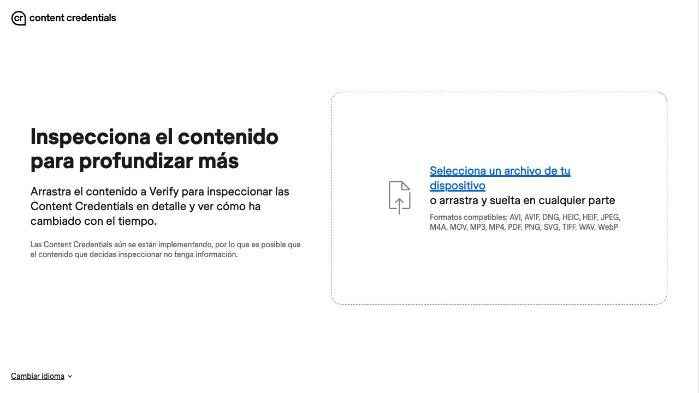

E l 20 de julio de 2023 OpenAI retiró su propio detector de textos escritos con IA. No lo anunció con un comunicado: añadió una nota al artículo con el que lo había presentado seis meses antes, diciendo que lo quitaba por su baja tasa de acierto. Quien mejor sabe cómo escribe un modelo de lenguaje intentó construir la herramienta que todo el mundo pedía, la tuvo medio año en la calle y la retiró. Hoy se venden decenas de detectores que prometen exactamente eso, y encima con un porcentaje. Conviene entender por qué ese porcentaje no mide lo que parece, y qué es lo que sí sirve para saber de dónde sale un archivo.
Por qué un detector de texto no puede acertar
Casi todos los detectores de texto miden lo mismo: lo predecible que resulta un texto para un modelo de lenguaje. Es una medida que tiene nombre técnico, perplejidad, y una idea sencilla detrás: si cada palabra es la que un modelo habría puesto, el texto parece de máquina; si hay giros raros, parece humano.
El problema está en el salto lógico. Lo predecible no es propiedad exclusiva de un texto generado: escribir con vocabulario común, frases cortas y estructuras simples también es predecible. Es decir, el detector no distingue «escrito por una IA» de «escrito con claridad y sin florituras». Son dos cosas distintas que la herramienta ve igual, y no hay ajuste de umbral que las separe, porque la señal es la misma.
El detector que OpenAI retiró deja ver el tamaño del fallo con sus propios números. En las pruebas que publicó la empresa, identificaba como «probablemente escrito por IA» el 26% de los textos que efectivamente lo eran — se le escapaban casi tres de cada cuatro — y al mismo tiempo marcaba como IA el 9% de los textos escritos por personas. Además exigía pegar al menos 1.000 caracteres para dar un resultado. Traducido a un aula de treinta alumnos: deja pasar a la mayoría de quien copia y señala a dos o tres que no han hecho nada.
Ese 9% es lo que convierte un detector en un problema y no en una ayuda imperfecta. Una herramienta que falla a favor del acusado es molesta; una que inventa culpables a un ritmo conocido y encima lo presenta con dos decimales es otra cosa.
El estudio que debería cerrar el debate
En julio de 2023 la revista Patterns publicó un trabajo de Weixin Liang, Mert Yuksekgonul, Yining Mao, Eric Wu y James Zou (Universidad de Stanford) que puso siete detectores comerciales a examinar dos montones de textos, todos escritos por personas: 91 redacciones del examen TOEFL, hechas por gente cuyo idioma materno no es el inglés, y 88 redacciones de estudiantes estadounidenses de catorce años.
El resultado no es un matiz. Con las redacciones de los estudiantes estadounidenses los detectores acertaron casi siempre. Con las del TOEFL, la tasa media de falsos positivos fue del 61,22%: más de la mitad de los textos escritos por personas fueron clasificados como generados por una máquina. Los siete detectores coincidieron en señalar 18 de las 91 redacciones (el 19,78%), y 89 de las 91 —el 97,80%— fueron marcadas por al menos uno de ellos.
La causa es la que cabía esperar: las redacciones señaladas tenían una perplejidad medidamente más baja. Escribir en un idioma que no es el tuyo significa manejar menos vocabulario y construcciones más simples — exactamente la huella que el detector lee como «máquina». No es un error de calibración, es el método funcionando como está diseñado.
Y queda el detalle que remata el argumento: cuando los autores pidieron a un modelo que reescribiera esas mismas redacciones con vocabulario más rico, la tasa de falsos positivos cayó al 11,77%. O sea, el detector se desactiva haciendo el texto más sofisticado. No está detectando quién escribe: está detectando lo llano que es lo escrito. Los propios autores recomiendan no usar estas herramientas en contextos de evaluación o educación.
Si escribes en inglés para trabajar o estudiar, tú eres el grupo del TOEFL. Es el dato con el que conviene ir a una reunión donde alguien proponga pasar los textos del equipo por un detector. Dos avisos honestos sobre el estudio: es de 2023 y mide detectores de texto en inglés, y los productos han cambiado desde entonces. Lo que no ha cambiado es el mecanismo del que viven.

Si te acusan: qué guardar y qué pedir
La defensa no se improvisa después, se prepara antes, y es barata: escribe en una herramienta que guarde el historial. El historial de versiones de Google Docs o de Word deja un rastro de cómo creció el texto —párrafos reescritos, frases abandonadas, el orden en que apareció cada cosa— que ningún detector puede fabricar ni refutar. Un documento que aparece entero de una vez no prueba nada malo, pero uno que crece a lo largo de días prueba bastante.
Si la acusación llega, pide tres cosas concretas: qué herramienta se ha usado, con qué umbral, y qué tasa de falsos positivos documenta su fabricante. Es una petición razonable y suele ser el final de la conversación, porque la mayoría de estos productos no publican esa cifra de forma verificable. Ofrece además lo que un detector no puede dar: explicar en voz alta tu argumento, de dónde salió cada fuente y por qué ordenaste el trabajo así.
Lo mismo vale en la otra dirección. Si corriges trabajos, un porcentaje no es un expediente: lo que de verdad detecta a quien no ha hecho el trabajo es una conversación de cinco minutos sobre lo que supuestamente ha escrito. En la guía de cómo usar la IA para estudiar está el detalle de qué suele estar permitido declarar y qué cuenta como plagio según la normativa de cada centro.
Lo que sí funciona (1): la procedencia firmada
La alternativa seria no intenta adivinar el origen mirando el resultado: hace que el origen viaje con el archivo. Es lo que propone C2PA, un estándar técnico abierto cuyo comité de dirección reúne a Adobe, Amazon, la BBC, Google, Meta, Microsoft, OpenAI, Publicis, Sony, TikTok y Truepic. Lo que el estándar añade a un archivo se llama Content Credentials, y su propia documentación lo compara con una etiqueta nutricional del contenido: quién lo creó, con qué herramienta y qué ediciones ha sufrido, todo firmado criptográficamente.
Fíjate en la dirección de la prueba, porque es lo que casi todo el mundo invierte. Las Content Credentials no dicen «esto es IA»: dicen «este archivo trae una historia verificable y aquí está». Sirven para confirmar lo que algo es, no para desmentir lo que no es.
Y de ahí sale su debilidad, que conviene conocer antes de confiar en ellas: son metadatos que acompañan al archivo, no algo incrustado en la imagen. Una captura de pantalla, una recompresión o una plataforma que no conserve el manifiesto los dejan por el camino. En nuestra guía de generar imágenes con IA ya avisábamos de esto con los tres modelos grandes: el archivo original los lleva, la imagen que acaba circulando por redes casi nunca. Que una foto no traiga credenciales no significa nada en absoluto.
Lo que sí funciona (2): la marca dentro de la señal
El otro enfoque mete la marca en el contenido mismo, no en sus metadatos. El caso más extendido es SynthID, de Google DeepMind: una marca de agua invisible en imágenes y vídeo, inaudible en audio —lo usan el modelo musical Lyria y los pódcast de NotebookLM— y, en texto, un ajuste de las probabilidades de cada palabra durante la generación, aplicado a lo que produce la aplicación Gemini.
Según Google, la marca está diseñada para sobrevivir a los retoques habituales: recortes, filtros, cambios de fotogramas y compresión con pérdida en imagen y vídeo; ruido, compresión MP3 y cambios de velocidad en audio. Merece la pena leer eso como lo que es —objetivos de diseño que la empresa describe, no una garantía contrastada por terceros—, porque su página oficial no documenta en qué casos falla.
Para comprobarlo hay una herramienta pública, SynthID Detector, que empezó limitada a periodistas y profesionales de medios y cuyo acceso Google ha ido abriendo a cualquiera; Gemini, el buscador y Chrome también pueden revisar una imagen, un vídeo o un audio que les subas y decir si encuentran la marca. Cubre lo generado por Google y por sus socios, y la lista pública incluye a OpenAI, NVIDIA y Kakao, con Apple anunciada.
El límite es el mismo que en C2PA y es el que hay que tener claro: la pregunta que responde SynthID Detector es «¿esto lleva marca de SynthID?», no «¿esto lo hizo una IA?». Cualquier cosa salida de un generador que no participe en el sistema sale limpia, y limpio no quiere decir humano.
Las dos juntas, y lo que ninguna te da
Son complementarias porque fallan por motivos distintos: una vive fuera del contenido y se cae al recomprimir, la otra vive dentro y aguanta, pero solo la ponen quienes se han sumado.
| Content Credentials (C2PA) | Marca de agua (SynthID) | |
|---|---|---|
| Dónde vive | En los metadatos, firmados | Dentro de los píxeles o de la onda |
| Qué te cuenta | Origen, herramienta y ediciones | Solo si la marca está o no |
| Qué la rompe | Una captura o una recompresión | Que el generador no la implemente |
| Qué no te dice | Nada sobre un archivo sin credenciales | Nada sobre generadores ajenos al sistema |
Y de ahí la asimetría que resume el asunto: las dos prueban presencia, ninguna prueba ausencia. Encontrar una marca o una credencial te dice algo firme. No encontrarla no te dice nada: puede ser un archivo hecho por una persona, o uno generado con una herramienta que no marca, o el mismo archivo marcado al que una captura de pantalla le quitó el rastro.
Por eso la pregunta útil no es «¿lo ha hecho una IA?», que casi nunca tiene respuesta, sino «¿de dónde sale este archivo y quién responde por él?», que casi siempre la tiene. Es el mismo cambio de enfoque que sirve con los datos que te da un modelo: no te fíes de su seguridad, mira la fuente — lo desarrollamos en la guía sobre alucinaciones de la IA.
Lo que obliga la ley europea desde agosto
Desde el 2 de agosto de 2026 se aplica el artículo 50 del Reglamento europeo de IA, el que regula la transparencia. Es la parte del AI Act que afecta a esto, y va dirigida a quien genera y a quien publica, no a ti como lector.
A quien ofrece un sistema de IA generativa le exige que su salida —audio, imagen, vídeo o texto— vaya marcada en un formato legible por máquina y resulte detectable como generada o manipulada artificialmente, con soluciones «eficaces, interoperables, sólidas y fiables en la medida en que sea técnicamente viable». Queda fuera el caso en que el sistema solo asiste en una edición estándar y no altera sustancialmente lo que le entra.
A quien usa esos sistemas y publica el resultado le exige dos cosas distintas. Si difunde una imagen, un audio o un vídeo manipulados que podrían pasar por auténticos —un deepfake—, tiene que declararlo; cuando la obra es claramente artística, satírica o de ficción, basta una indicación que no estropee el disfrute. Y si publica un texto generado con IA para informar al público sobre asuntos de interés general, debe declararlo también, con una excepción importante: no se aplica si una persona ha revisado o editado el contenido y alguien asume la responsabilidad editorial de publicarlo.
La lectura honesta del artículo está en esas siete palabras: «en la medida en que sea técnicamente viable». La ley da por supuesta una tecnología de marcado mejor de la que existe hoy, y ese es el margen por el que se cuela todo lo que no está marcado. Si quieres el mapa completo de la norma —a quién obliga, con qué plazos y qué niveles de riesgo distingue—, está en la guía del AI Act explicado.
Octubre de 2026: el código de buenas prácticas de etiquetado y un caso real de desinformación
Desde agosto de 2026 las normas de transparencia del reglamento de IA son aplicables, y la Comisión Europea ha publicado el código de buenas prácticas sobre marcado y etiquetado de contenido generado por IA (versión final del 10 de junio de 2026). Es voluntario: no es una obligación en sí, sino una guía práctica que ayuda a proveedores y usuarios de IA generativa a cumplir las obligaciones de transparencia. Según la propia Comisión, esas obligaciones incluyen etiquetar claramente los deepfakes y los textos generados por IA sobre asuntos de interés público, y avisar cuando alguien interactúa con un sistema de IA como un chatbot.
Una cautela de calendario: algunos análisis jurídicos mencionan un periodo transitorio hasta el 2 de diciembre de 2026 para el marcado de sistemas que ya estaban en el mercado antes de agosto. Esa fecha no aparece en la nota de la Comisión que hemos consultado, así que confírmala en el texto del Reglamento (UE) 2026/1744 antes de apoyarte en ella. El calendario completo está en El AI Act explicado.
Un ejemplo de por qué la comprobación de origen importa más que cualquier detector: OpenAI anunció el 8 de octubre que bloqueó cuentas iraníes que usaban ChatGPT para colocar casi 100 artículos de opinión en medios con siete periodistas falsos. Los textos no se delataban por su estilo, sino por una identidad que no existía. Lo contamos en esta noticia. La pregunta útil, otra vez, no es «¿lo escribió una IA?», sino «¿existe esta persona y dónde más ha publicado?».
- Antes de dar credibilidad a un artículo de opinión desconocido, busca al autor fuera de esa web: perfil profesional, publicaciones anteriores, otros medios.
- Una foto de autor o un perfil perfectos no prueban nada: también pueden estar generados.
- Si un contenido te pide actuar con prisa (compartir, pagar, votar), aplica la misma regla que en las estafas: comprueba por otro canal. Tienes más en estafas con IA.
Un procedimiento en cinco pasos
1. Cambia la pregunta
De «¿esto lo ha hecho una IA?» a «¿de dónde sale y quién responde por él?». La primera casi nunca se puede contestar; la segunda se contesta con cinco minutos de trabajo y es la que de verdad te protege.
2. Busca el origen antes que la señal
Una búsqueda inversa de la imagen, la primera publicación donde apareció, la antigüedad y el historial de la cuenta que la difunde. Esto resuelve más casos que cualquier herramienta técnica, y resuelve también el fraude más común, que no es el contenido generado sino el contenido real sacado de contexto.
3. Comprueba la procedencia, si la hay
Content Credentials y SynthID Detector, en ese orden de facilidad. Si encuentras algo, es información firme. Si no encuentras nada, no has averiguado nada: vuelve al paso 2.
4. Con voz y vídeo, verifica por otro canal
Si hay una petición urgente de dinero o de datos de por medio, ninguna comprobación técnica llega a tiempo. Corta y devuelve la llamada por un número que tengas tú guardado. Es la defensa que explicamos en clonar voz y generar audio con IA y en la de estafas con IA, y sigue siendo la única que no envejece.
5. No uses un porcentaje como prueba
Ni contra un alumno, ni contra un proveedor, ni contra ti mismo cuando alguien te lo ponga delante. Un número con decimales parece una medición y en esto no lo es.
Resumen en una línea: los detectores de texto no son una herramienta inmadura que mejorará, son una respuesta a una pregunta mal planteada. La procedencia firmada y las marcas de agua sí avanzan, pero prueban presencia y nunca ausencia — y mientras eso siga así, la verificación sigue siendo un trabajo de origen y de fuentes, no de software.
Humanizer: quita de tus textos lo que suena a IA
Humanizer es una skill gratuita (licencia MIT) que reescribe textos generados con IA para que suenen a una persona, sin cambiar lo que dicen. Se basa en la guía de Wikipedia Signs of AI writing, la que usan sus editores para detectar artículos escritos con IA, y revisa 26 patrones.
Cómo instalarla
- Claude Code:
/plugin marketplace add blader/humanizery después/plugin install humanizer@humanizer. - Claude.ai o Claude Desktop: descarga el repositorio como ZIP y súbelo como skill en Ajustes.
- Codex:
npx skills add blader/humanizer --global --agent codex.
Qué corrige
Entre las señales más claras: el «no es X, sino Y», las frases de cierre de una línea, los dichos que suenan profundos, los arranques teatrales como «Seamos sinceros» y discutir con nadie («No digo que…»). Pásale un texto y te devuelve la versión limpia.
Lo honesto: el propio autor avisa de que el objetivo no es engañar a los detectores y de que estos siguen marcando la mayoría de los textos. Úsala para escribir mejor, no para hacer pasar por tuyo algo que no lo es.
Repositorio: github.com/blader/humanizer